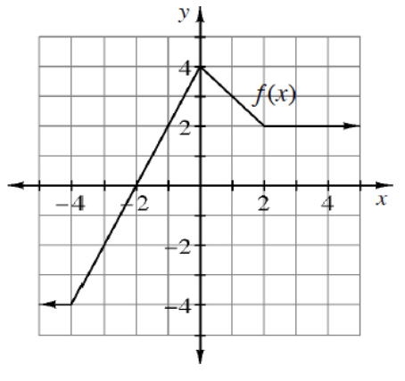
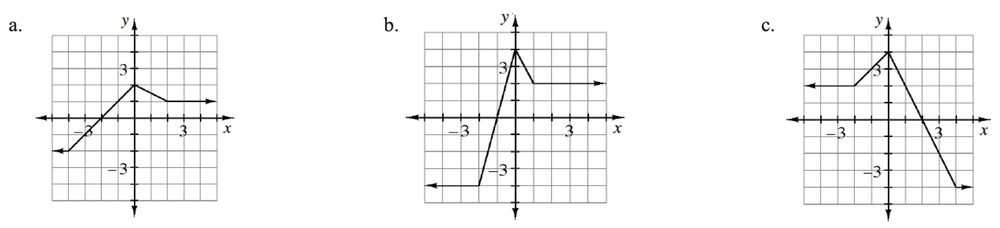
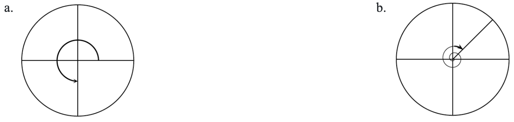

When James solved \(\cos(x)=\frac{1}{2}\), his calculator told him that \(\cos^{-1}\left(\frac{1}{2}\right)\approx 1.047\). Verify that this approximate solution corresponds to the exact solution of \(x=\frac{\pi}{3}\).
\(x=\frac{5\pi}{3}\) is a solution to \(\cos(x)=\frac{1}{2}\), but James’ calculator did not give that answer. Why?
Solve \(\cos(x)=\frac{1}{2}\) for all real \(x\).
Can you get the complete solution entirely from a calculator, or do you have to draw and think?
Solve the following equations on the specified domain.
\(2\cos(x)-\sqrt{3}=0\) for \(0\le x<2\pi\)
\(2\cos(x)-\sqrt{3}=0\), for all real \(x\)
Given the graph of \(y=f(x)\) below, write equations that will generate each of the graphs below in terms of \(f(x)\).


Below are two of the special angles that are used in the unit circle. Identify the radian measure for each angle shown.Then state the sine, cosine, and tangent of each angle. Remember, counterclockwise angles are positive and clockwise angles are negative.

Explain why \(\tan(x)=\frac{\sin(x)}{\cos(x)}\). How can tangent be seen geometrically in the unit circle?
How can you predict the size of a fraction? Evaluate each fraction below.
\(\frac { 1 } { 0.01 }\)
\(\frac { - 1 } { 0.0001 }\)
\(\frac { 1 } { .000001 }\)
\(\frac { -1 } { .00000001 }\)
What happens when you divide a number by a number that is much, much smaller than the number?
As the connected complexity of mathematical concepts evolve, your mathematical knowledge evolves as well. Previous knowledge provides the necessary skills to acquire new learning. If necessary, review the Solving Linear and Quadratic Equations Skill Builder, to strengthen your understanding of this topic.
Solve each of the following equations for \(x\).
\(3(x-2)+4x=-4x+3\)
\(y=ax-bx+3\)
\(x^2-7x+7=5x+8\)
\(3x^2-1=-5x+1\)
Use composition to verify \(f(x)=\frac{x^3}{7}+2\) and \(g(x) =\sqrt [ 3 ] { 7 x - 14 }\) are inverse functions.